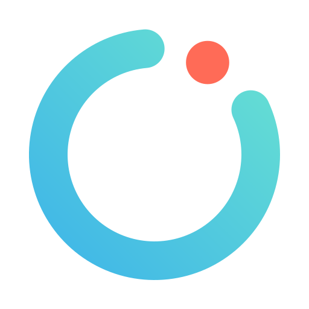

Emory Hacks 2026 · Healthcare

OnsetA one-minute FaceTime check-in for the 90 days after a stroke.
Move the mouse. It follows you.
The problem
Going home is
the risky part.
1 in 4US strokes is a repeat stroke.
10–15%have a major stroke within 3 months of a TIA.
The risk is highest in the first weeks. At home, nobody is checking.
Source: CDC, Stroke Facts; CDC, About Transient Ischemic Attack
So Onset checks in. Every day.
Day 0 of 90
One minute. No app to install. Prescribed at discharge, answered on FaceTime.
The idea
It compares you
with you.
Live demo
Let's call it.
A real FaceTime call to the Onset line. Watch the captions, the numbers, and what happens when something changes.
Call 1A usual morning
Matches this person's own baseline.
Call 2An acted change
A one-sided smile, one arm sinking, a pause mid-sentence.
Waiting for a call…
When something changes
It brings help
into the call.
- A change is noticedDifferent from your usual, or too unclear to tell.
- Your caregiver gets a textA short summary and a private link.
- They join the same callThey see you and talk to you, live.
- “Please call 911 now.”Out loud and on screen. Onset leans toward a false alarm.
Under the hood
Every check-in is kept.
The trend matters too.
FaceTimeno app
Chertthe line
LiveKitreal-time media
Onset agentMediaPipe face + pose · Scribe speech
Fixed rulesyou vs your baseline
Caregivertext + join link
- Smile symmetry
- Arm drift
- Speech pace
- Flagged: a slow decline over three weeks
Built with LiveKit · Chert · ElevenLabs · Gemini · MediaPipe
Your turn
Try it on
your phone.
Thank you. Questions?